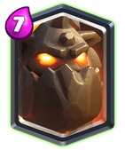

Legendary Card: Lava Hound

The domination of LavaLoon ended a long time back due to rise of Bridge Spam. But since the bridge spam meta has finally started to disappear will Lava Hound make a comeback? We don’t know yet cause the meta is still pretty new.
But as of now, Lava Hound isn’t one of the strongest legendary card.
It is quite tanky and the Lava Pups provide great damage but with newly buffed Ice Wizard and Bats being quite popular its fails to do much.
Really feel bad for him
The thing is I don’t think this card should be buffed. Because Inferno Dragon and Baby Dragon being popular you have good support troops and the release of two new air cards Flying Machine and Skeleton Barrel may synergise well with this card and if they are good enough, we will have a whole new variety of Lava Hound decks. Till then we will have to wait